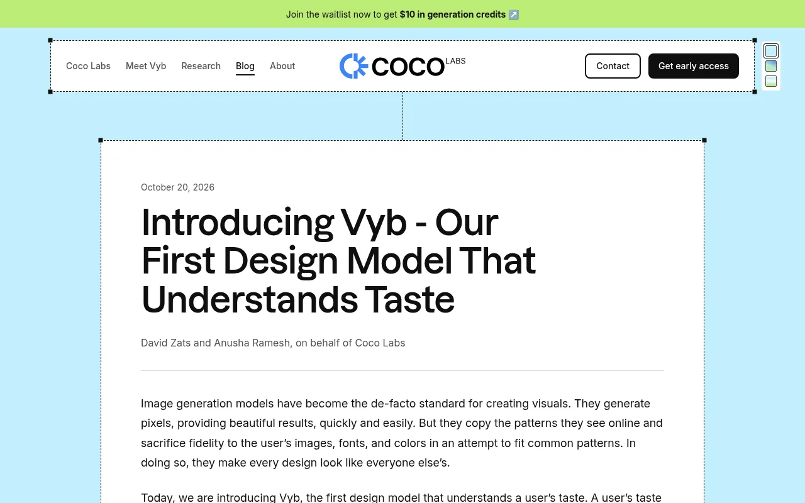
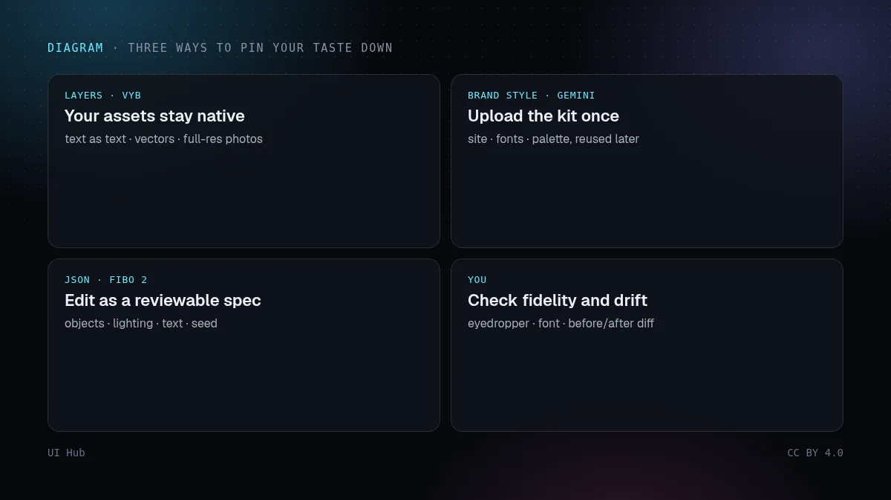
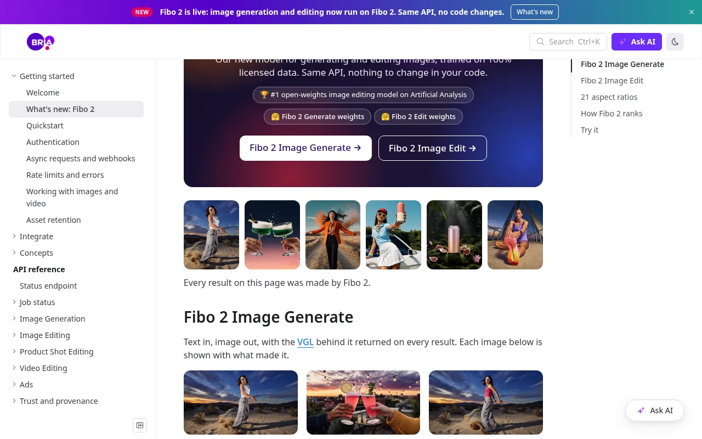

人们对 AI 生成图形最常见的抱怨，不是难看，而是都长一个样：氛围对了，字体不对；品牌色差一点点；想改标题里一个字，整行字就糊了。10 月 20 日的三项发布从三个方向处理这个问题，放在一起看，正好是一张选择任何视觉 AI 工具时该问什么的地图。


Coco Labs 公布了自家基准测试：在 145 款 Google 字体上，Vyb 的字形吻合度为 90.3%，它测试的次优模型为 76.0%；指定十六进制颜色时平均误差为零；在 200 次编辑中，Vyb 平均只改动 11.9% 的像素，而对比的图像模型都超过 90%。这些是厂商用公开字体做的测试，不是独立结果，但最后一个数字对日常工作最关键：为了改一个字而重画整张图的模型，会一点点磨掉你喜欢第一版的所有理由。另外，Vyb 的通过率略低于最强对手，Coco Labs 的解释是模型会拒绝会损害可读性的修改。
三者都在把「审美」从提示词里搬出来，放进可以检查的东西里。图层让你的字体和颜色成为事实而不是建议；存下来的品牌风格把规范变成可复用的资产；结构化 JSON 把一次修改变成渲染前可以审阅的差异。它们针对的失败，和我们在 AI 生成界面里看到的是同一种：除非你的选择以模型无法重新诠释的形式固定下来，否则模型总会滑向训练数据的平均值。
两点提醒。第一，记住的品牌风格只和你上传的品牌包一样好。只有一个 Logo 和一套模糊的配色，得到的就是稳定的平庸。第二，别把分层导出当成设计系统。如果工具输出了你字体的可编辑文字，却无视你的间距和层级规则，后面还是要返工。图层要争取，版式也照样要检查。
{
"brand": "Northwind Tea",
"fonts": { "display": "Fraunces 600", "body": "Inter 400" },
"colors": { "ink": "#1d1a16", "paper": "#f6f1e7", "accent": "#8a5a3b" },
"logo": "logo.svg（安全区 ≥ 1 倍大写字母高度）",
"layout": "一张焦点照片 · 标题在左上 · 最多 2 段文字",
"never": ["文字渐变", "图库 3D", "超过一个强调色"],
"keep": "产品照片像素不动，只改文字和颜色"
}
上面的品牌包，相当于视觉版的 Token 文件。如果要为产品建一份，可以看我们的给智能体的设计 Token和 OKLCH 配色，讲命名和选色；昨天那篇 Lovart 审美记忆则是从智能体一侧讲同一件事：把你的审美写成机器能检查的形式。